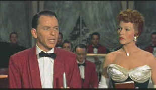

| Pal
Joey/B+,B+ |
| Columbia/1957 |
Look
no further than here for the perfect late vintage Sinatra
musical than Pal Joey. Frank plays the heel to perfection and belts out songs
delivered with his patented phrasing laced with an amoral edge.
Sinatra never raked his hat to better effect. Every sentence is
a challenge. The jacket hang casually over his shoulder is
nothing more than an oversized chip.
 |
| What
am I bid for this gorgeous movie queen? ©Columbia |
Joey Evans is the guy all the girls
fall for. Joey blows into San Francisco after a rude departure
from another city and finds himself a singing/MC gig at a local
girlie club. The innocent blonde next door falls for Joey and an
elegant Knob Hill social butterfly, who is also a former show
girl, also falls for Joey's brand of sex appeal. The
complications that ensue are happily emphasized in song.
Story-wise, probably the biggest issue is why all
the girls fall head over heels for Sinatra's Joey Evans. Is
there something about a heel? No matter. This is standard
backstage stuff chiefly useful to introduce the songs and to
emphasize costumes and other production values.
The ladies are truly lovely to look at:
Rita Hayworth playing the leggy ex showgirl moving in high
society circles and Kim Novak the innocent blonde from the Midwest.
Chief amongst the joys for me in watching Pal
Joey are seeing Rita Hayworth before her beauty took a
precipitous fall to age and disease. Hayworth delivers her big
song and dance number (dubbed) with good-natured self parody, reminding
the audience that she hasn't forgotten how to move those hips
since her sexy turn as Gilda or while dancing the light
fantastic partnered with Fred Astaire. Kim Novak is another
issue. Novak simpering innocence doesn't translate well into a
song bird. I cringed listening to her warble "My Funny
Valentine" and I can't say I blame Mrs. Simpson for wanting
her out of the show.
Oh yes, and Sinatra croons, singing one of
his signature songs, "The Lady is a Tramp" with his
inimitable easy, breezy phrasing, with some extra special leers
reserved for the hostess of the evening at which he performs.
"Bewitched Bothered and Bewildered" is given stylish
treatment by Sinatra and Hayworth. Some of Hayworth's singing is
dubbed as are Novak's, same for our funny valentine.
Production design is simple and
elegant. Originally created
from the stories of John O'Hara with songs and music by Richard
Rogers and Lorenz Hart for the Broadway stage, Pal Joey made it
to the screen under the helm of veteran director George Sidney.
Sidney, who guided Judy Garland through the paces in Harvey
Girls, knows how to make the most of available talent. The
songs are given clean simple editing to deliver maximum impact.
Pal Joey is an outstanding DVD.
Transfer elements are in lovely condition with no evident color
fading or instability. The anamorphic picture is sharp with no
unsightly edge enhancement. Fine grain is delivered with a fine,
tight structure. Contrast range is very strong and sets come to
life with maximum punch. The Dolby Digital is mono and delivered
with clear dialogue and stable music. There's no evidence of
hiss or warble.
|
|

The
Movie Poster Archive include extensive poster images from the
films of stars like Susan Hayward, Kirk Douglas, Katharine
Hepburn and many more. This month's featured star is Kirk
Douglas.

 Gary
Morris's insightful publication Bright Lights Film Journal
turns the celluloid in films from a unique perspective. Click on the image above for more pure movie views. Gary
Morris's insightful publication Bright Lights Film Journal
turns the celluloid in films from a unique perspective. Click on the image above for more pure movie views.

The Imaging Science Foundation promotes proper standards in
home theater viewing. ISF trained technicians offer monitor
calibration services to consumers. The difference in a
properly calibrated monitor can be astounding. Click on the
image to find an ISF member near you.
 DVD
Informix is a British site providing a variety of DVD
information, including lots of DVD software. Check it out from
articles to links. DVD
Informix is a British site providing a variety of DVD
information, including lots of DVD software. Check it out from
articles to links.
 Lovers
of Hong Kong movies will relish
MC4's site that includes reviews and other information
about the Hong Kong movie scene. Lovers
of Hong Kong movies will relish
MC4's site that includes reviews and other information
about the Hong Kong movie scene.

The
Feature
Archive has articles ranging from Akira
Kurosawa to Blonde
Bimbos and John
Ford.
Redeeming
the Writer:
A Conversation with Frank Darabont
|